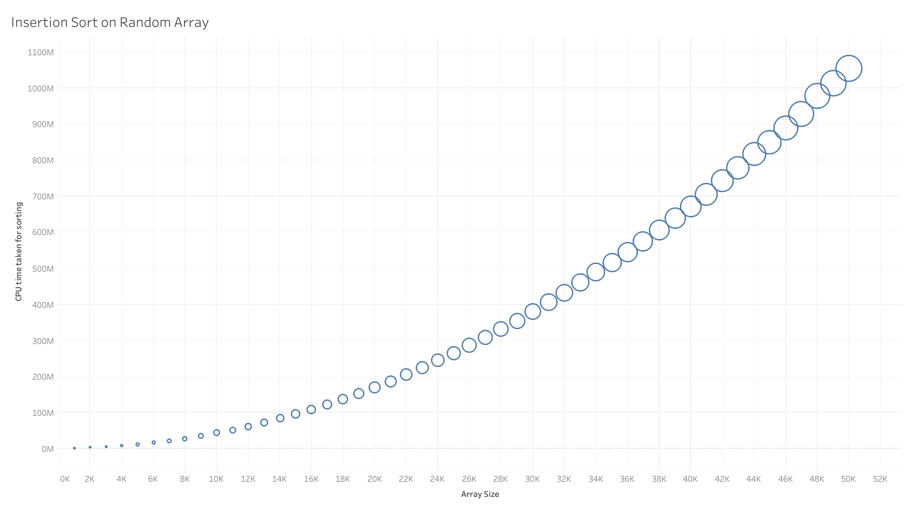
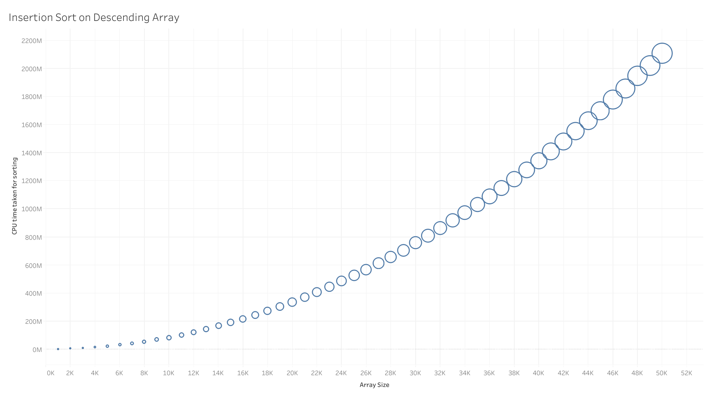
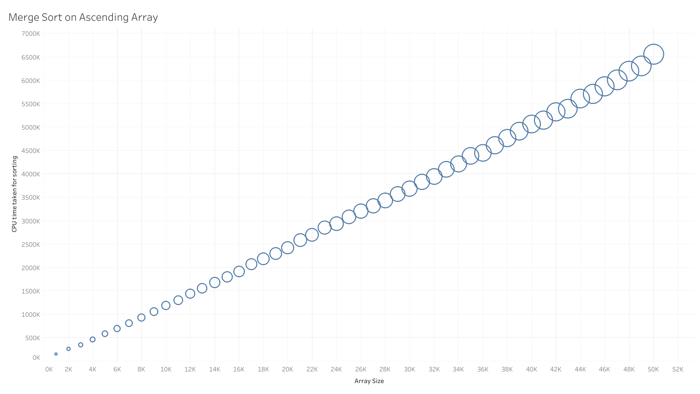
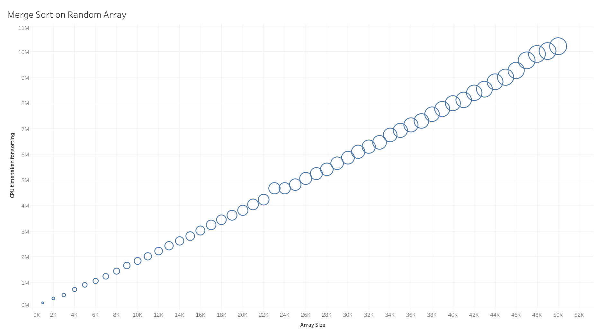
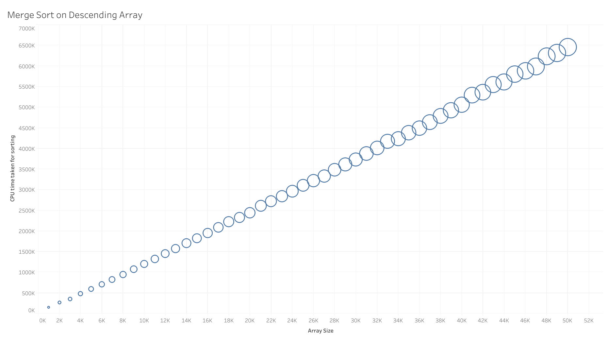

Example Class 3 Report (Project 3A)
Full Algorithmic Implementation
Insertion sort in its entirety is adding a number in an already sorted array. This is achieved by arranging two 2 key values first and then repeating the process for the rest of the array. The insertion sort algorithm we used works by comparing each key (of index i) in the input array against the key that comes before it (index i-1).
If the key at index i is smaller than the one at index i-1, these 2 keys would swap positions, such the key previously at index i is now at index i-1, and vice versa. They would continue to swap positions, until there are no more keys in front of it (i.e. the ith key is the first key of the array) or the key before it is smaller, as the array has already been sorted. Thus an array in ascending order is obtained.
Merge sort works by using the divide-and-conquer strategy. if the input array has a size of 1 or less, it is considered trivially sorted; otherwise, the input array will be split evenly into two subarrays and have merge sort performed on them, after which the two sorted subarrays are joined using the merge function to obtain an array of the original size, sorted in order.
Also, if one of the subarrays still has keys when the other subarray is exhausted, the remaining keys would be merged directly into the auxiliary array without comparison; and if there are 2 keys that are equal in value on separate subarrays, they would be merged together, which means one less key comparison. This case does not occur in our program as the input arrays used hold unique integers.
Generating Input Data: The input data used are arrays of unique integers, from 1 to n, where n is the size of the arrays. The array sizes used range from 1000 to 50 000, with step size of 1000. For each array size, ascending, descending and randomly ordered arrays are generated: arrays of ascending and descending order are generated using simple for-loops where each key’s value correspond to its index in the array; and arrays of random order are generated using the Fisher-Yates shuffle algorithm, where for an input array, a random number k between 0 and the number of keys yet to be shifted is generated, and shifted to the end of an output array.
Measuring Time Complexity: For each array type and size, we did 60 insertion and merge sorts, and counted the number of key comparisons as well as the the CPU time. The dataset is then trimmed to obtain the interquartile mean. These statistical results obtained are the empirical results.
Theoretical Analysis of the Time Complexity of Insertion Sort with Empirical Results:
1. Best Case [ n-1 = O(n) ]
The best case for insertion sort occurs when the array is already sorted in the desired order. In this case, each key in the array, except for the first key, only needs to be compared to the key right before it. So for an array of length n, only n-1 number of key comparisons need to be made, resulting in a time complexity of O(n).
2. Worst Case [ n*(n-1) /2 = O(n2) ]
The worst case for insertion sort occurs when the array is already sorted, but in the reverse order. In this case, each key in the array, except for the 1st key, needs to be compared to all the keys that come before it.
For a key at index i, there are i-1 keys before it, so it has to go through i-1 number of key comparisons. If there are n number of keys in the array (i.e. array of size n), there will be (n-1) + (n-2) + … + 2 + 1 = (n*(n-1) /2) number of key comparisons when sorting through this array, resulting in a time complexity of O(n2).
3. Average Case [ (n-1)*(n+2) /4 = O(n2) ]
The average case for insertion sort occurs when the keys in the array are in a completely random order. For each key in a randomly-ordered array, there is an equal probability of a key at a particular index being compared to each key that comes before it, because there is an equal probability of that particular key being smaller or larger than the key that is in front (ie ½) . Mathematically, this means that for each key at index i in the array, there is a 1/i chance of it being compared to each key at index 0 through i-1, with 1 comparison at each index.
So, on average, a key at index i goes through (1/i)(1+2+...+i) = (1/i)( i*(i+1)/2 ) = (i+1)/2 number of key comparisons.
For an array of length n, each key in the array, except for the first key, goes through the above
process. Therefore, there are
[( (n-1) + 1 ) /2] + [( (n-2) + 1 ) /2] + … + [( 2+1) /2] + [(1+1) /2]
= (½)* [( (n-1) + 1 ) + ( (n-2) + 1 ) + … + ( 2+1) + (1+1)]
= (½)* [ n + (n-1) + … + 3 + 2 ]
= (½)* [ (n-1)*(n+2) /2 ]
= (n-1)*(n+2) /4
number of key comparisons in an array of length n, resulting in a time complexity of
O(n2).
|
Ascending Order O(n) |
Random Order O(n2) |
Descending Order O(n2) |
|---|---|---|

|
 |  |
Theoretical Analysis of the Time Complexity of Merge Sort
Merge sort functions by splitting the original array (of length n) into 2 subarrays of equal length (n/2), and recursively splits the subarrays till each subarray contains only 1 key. When a subarray has a length of 1, it is considered trivially sorted so there is no need for any key comparison. This is the base case (W(1) = 0) for the recurrence equation which solves the time complexity of merge sort..
The comparisons of keys in the subarrays are done in the merging of a pair of subarrays that were split from an original array. This forms the recurrence equation: W(n) = 2*W(n/2) + (number of key comparisons in the merging of subarrays) for number of key comparisons for a merge sort on an array of length n.
For an array of length n where n = 2k (k ≥ 0), there will be k number of splits. This is because each split results in a subarray of length of n/2 = 2k-1 and every subarray is split recursively till each of them has a length of 1 = 20. k number of splits would result in k number of pairs of subarrays, which in turn results in k number of merges. Therefore, the number of merges in a merge sort on an array of length n is k = log2 n.
The number of key comparisons in a merge of 2 subarrays varies, case-dependent.
1. Best Case [ (n/2)*log2 n = O( n*(lg n) ) ]
The best case for merge sort occurs when every key in one subarray are smaller than or equal to every key in the other subarray. Each key of the first subarray will be compared against the first (smallest) key of the second subarray. After comparing and finding that the last (biggest) key of the first subarray is smaller than the first (smallest) key of the second subarray, the rest of the keys in the second subarray are assumed to be bigger than all the keys in the first subarray, and are merged without a need for comparison.
As such, the number of key comparisons in this case is the length of the first subarray. If the original array is of length n and the recursive splitting is such that 2 subarrays resulting from the split are of approximately equal length, then the length of the first subarray is n/2. This means n/2 number of key comparisons for each merge, so there are n/2 number of key comparisons.
The best case can also occur when each key at index i in the first subarray is equal to each key at index i in the second subarray, in which case both keys are merged simultaneously. When the keys from both subarrays are all merged pair-wise, simultaneously, the number of key comparisons is equal to the number of keys in either subarray (i.e. length of subarray) which is also n/2.
Therefore, the number of key comparisons is given by the recurrence equation:
W(n) = 2*W(n/2) + n/2, or
W(2k) = 2* W(2k-1) + 2k-1
= 2*( 2*W(2k-2) + 2k-2 ) + 2k-1
...
= 2k * W(1) + k * ( 2k-1 )
= 0 + (log2 n) * n / 2
After simplification, this gives us a time complexity of O( n * lg n ).
2. Worst Case [ n*log2 n - n + 1 = O( n*(lg n) ) ]
The worst case occurs when the largest and second largest keys among both subarrays are in separate subarrays or, if there are two keys with the largest value, each of these keys are in separate subarrays.
This arrangement is such that all keys up to the largest keys in each subarray of length n/2 have to be compared to another key. The largest keys in both subarrays would be compared against each other before being merged simultaneously. As such, the number of comparisons in one merge is n/2 + n/2 - 1 = n-1. Note that the number of key comparisons is one less than the total length of the subarrays as the last keys of both subarrays are merged together.
Therefore, the number of key comparisons is given by the recurrence equation:
W(n) = 2* W(n/2) + (n-1), or
W(2k) = 2* W(2k-1) + (2k - 1)
= 2* [ 2* W(2k-2) + (2k-1 - 1) ] + (2k - 1)
= 22 * W(2k-2) + (2k - 2) + (2k - 1)
= 23 * W(2k-3) + (2k - 22) + (2k - 21) + (2k - 20)
…
= 2k * W(2k-k) + k * 2k - ( 2k-1 + … + 22 + 21 + 20 )
= 2k * W(1) + (log2 n) * n - ( 2k -1 )
= 0 + (log2 n) * n - n + 1
After simplification, this gives us a time complexity of O( n * lg n )
3. Average Case [ c1*n*log2 n + c2*n + c3 = O(n*(lg n) ]
The average case for merge sort occurs when keys of the input array are randomly-ordered, such that each key is equally likely to be in any position in the array. In the average case, the probability of a key in the first subarray having to be compared to a key in the second subarray in each merge has to be taken into account when calculating the average total number of key comparisons in merge sort.
Based on the best case and worst case of merge sort, we know that the number of key comparisons in a merge must be between n/2 and n-1, inclusive. That is, the possible numbers of key comparisons forms the sequence {n/2, n/2 + 1, …, n-2, n-1}.
Merging takes n-1 number of key comparisons (also the worst case) when one subarray has the largest key, while the other has the second largest key. This results in 2 combinations of (n-2)! permutations of subarrays (i.e. 2*(n-2)! permutations).
Merging takes n-2 number of key comparisons when one subarray has the largest 2 keys, while the other has the third largest key. This results in 2 combinations of (n-3)! permutations of subarrays (i.e. 2*(n-3)! permutations).
Merging takes n-3 number of key comparisons when one subarray has the largest 3 keys, while the other has the fourth largest key. This results in 2 combinations of (n-4)! permutations of subarrays (i.e. 2*(n-4)! permutations).
...
Merging takes n-(n/2 - 1) number of key comparisons when one subarray has the largest n/2 - 1 keys, while the other has the (n/2)th largest key (ie one subarray has all but the smallest larger keys, while the other subarray has all but the largest smaller keys). This results in 2 combinations of (n - (n/2 - 1+1))! = (n/2)! permutations of subarrays (i.e. 2*(n/2)! permutations).
In general, merging takes n-j number of key comparisons when one subarray has the largest j keys, while the other has the (j+1)th largest key. This results in 2 combinations of (n−j+1)! permutations of subarrays (i.e. 2*(n−j+1)! permutations).
The general term for number of combinations for a particular number of key comparisons does not apply to n/2 number of key comparisons (also the best case). n/2 number of key comparisons has only 2 combinations: the first subarray contains all the smaller keys, while the second subarray contains all the larger keys, and vice versa.
As such, the probability for merging requiring a particular number of key comparisons is given by:
P(n-j)
= (number of permutations of subarrays that can result in that number of key comparisons) /
(total number of possible permutations of subarrays)
= 2*(n−j+1)! / ( 2*(n-2)! + 2*(n-3)! + … + 2*(n/2)! + 2)
After obtaining the above probability, the average number of key comparisons in one merge is given by: sum
of ( (n-j) * P(n-j) ). The number of key comparisons required in for merge sort on average can
thus be obtained by solving the recurrence equation:
W(1) = 0
W(n) = 2*W(n/2) + (average number of key comparisons in one merge of subarrays of size
n/2)
The result should be in the order of c1*n *(log2 n) - c2*n + c3 = O( n * lg n ) which closely corresponds to the the average number of key comparisons shown on page 43 of (Vitter and Flajolet, 1990).
Alternatively, the order of time complexity for the average case of merge sort is the upper-bounded by the worst case ( O( (n*log2 n) - n + 1 ) ) and lower-bounded by the best case ( Ω( (n/2)*log2 n ) ), so it is in the tight bound of θ(n * lg n).
|
Ascending Order O(n log n) |
Random Order O(n log n) |
Descending Order O(n log n) |
|---|---|---|
|  |  |  |
Comparison of empirical results with theoretical analysis of time complexity
With the exception of average case time complexity of merge sort, the empirical results of all cases of both sorting algorithms corresponds to the time complexity obtained via theoretical analysis, such that a simple substitution of array size into the time complexity equations results in the actual number of key comparisons.
References
Vitter, J. and Flajolet, P. (1990). Average-Case Analysis of Algorithms and Data Structures. [online] Algo.inria.fr. Available at: http://algo.inria.fr/flajolet/Publications/ViFl90.pdf [Accessed 6 Oct. 2018]
| Authors - SE1 (Group 2) |
|---|
| LYZ |
| Ngo Jun Hao Jason |
| TSF |
| TYHK |
| YHL |